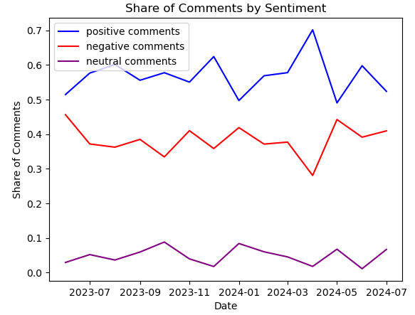

NLP
Overview
As discussed in the
Selecting Comments
For NLP we used data from all three subreddits (investing, cryptocurrency, and finance), and focused on comment data only. The distribution of comments between the Subreddits was very uneven with finance having 25,291 comments, investing 516,497, and CryptoCurrency 3,360,896. For our initial visualizations and building the pipeline, we sampled around .1% of the data, to conserve computational resources. We then evaluated the distribution of comment lengths, and found that most comments were relatively short, with less than 100 characters.
| Percentile | Comment Length (characters) |
|---|---|
| 10% | 12 |
| 10% | 15 |
| 20% | 27 |
| 30% | 40 |
| 40% | 51 |
| 50% | 63 |
| 60% | 79 |
| 70% | 118 |
| 80% | 176 |
| 90% | 332 |
We also looked at the distribution of comments over time, and found that there was a substantial difference in the number of comments across the subreddits month-to-month (i.e. September 2023 had 6x the comments of July 2024).
In terms of other exploratory work, we looked at the TDF-IDF scores of the documents, and found words such as ‘bull’ and ‘bear’ to have large importance, as well as several slang words such as ‘apes’ that are favored by users of these forums. Overall, however, the TDF-IDF analysis did not give us a clear direction to focus on for our predictive work.
Sentiment Pipeline
To clean and process the data, we: 1. Turn all strings to lowercase 2. Use universal sentence encoder to create embeddings of our sentences 3. Get sentiment scores from the pretrained twitter DL model.
We also tested several other components we hope to fit into the pipeline: 1. A Spark NLP lemmatizer 2. A Spark NLP stopword remover 3. A Spark NLP sentence detector
We tested two other sentiment models built into Spark NLP, but found they had a large class-imbalance. A basic sentiment encoder using a dictionary of words returned more than 95% positive outputs, which did not seem to match the makeup of the data. Based on these concerns, we preferred the Twitter DL sentiment model, which returned a more modest 50-70% positive outputs depending on the data used.
Identifying Subjects
We used RegEx matching to identify several central topics within investing, and whether they were present in each comment. As a proxy for equity markets, we looked for strings similar to “S&P 500,” representing the largest equity index, and the many shorthands used for the index online. As a proxy for cryptocurrency markets, we looked for strings and shorthands similar to “bitcoin” and “ethereum.” Finally, we looked for strings referring to the Federal Reserve, or its chair Jerome Powell.
Next, we sought to understand whether any of these topics would correspond to differences in sentiment. We also found that Cryptoccurency was by far the most common topic, which made sense as this was also the largest subreddit we studied. Accounting for the imbalance, we looked at the share of comments mentioning each topic that espoused positive or negative sentiments. We found that comments which mentioned cryptocurrency or the S&P had a higher share of positive comments (~70% vs. 54%).

Sentiment over time
Now that we have positive/negative/neutral sentiment calculated for the comments in our dataset, we can compare the proportion of comments which fell under each of these sentiments. We see that the proportion in each category has remained relatively constant, except for April 2024, when positive comments surged to around 70% of all comments, and negative comments dropped to around 10% of all comments, from close to 60% and 20% in the long run average, respectively.

Conclusion - Input to ML
Based on the work of our EDA and NLP components, we have found that there are certainly mentions of financial topics within the r/cryptocurrency, r/finance, and r/investing. subreddits. We also found reason to believe that cryptocurrency, in particular, might benefit from a more positive sentiment on Reddit than other financial instruments. Following this result, we next turned to evaluate whether this positive sentiment might translate into movements in Bitcoin prices via our ML models.